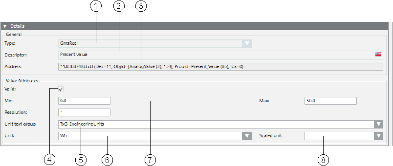

Details Expander
In the Details expander, you can:
- Edit the Data Point Type
- Edit the property descriptive text
- Edit attribute properties
- Assign scaled units

Details Expander | ||
| Name | Description |
1 | Type | Defines the data point type in Desigo CC. The attributes are reset if you change the type. All configurations are lost. |
2 | Descriptor | Describes the property. |
3 | Address | Shows the address of the data point. |
4 | Valid | The settings are inherited as presets for the Function and instances when checked (see Presetting Behavior). |
6 | Unit text group | List of available text groups. New or updated text groups must be refreshed by pressing the F5 key. For value-scaled units, the TxG_EngineeringUnits must be selected. |
6 | Unit | Selection list for a unit from the selected text group. |
7 | …… | Optional entry fields by data type (see Value Attributes Group Box). |
8 | Selection list for a scaled unit from the text group TxG_EngineeringUnits. | |
Value Attributes Group Box
The selected data point type determines the entry fields available for this type. See the following:
- Boolean
- Real
- Date Time
- BitString
- Enumeration
- UInteger
- Application Specific


The following tables describe possible items available depending on the selected data point type.
Field Definition | |
Allow Date Time | Entering date and time is possible. |
Allow Wildcards | Entering wildcards *, ? is possible. |
First Bit | Defines the first bit. For example, 0=Off. |
Descriptor | Describes the corresponding property. |
Last Bit | Defines the first bit. For example, 4 =Automatic. |
Min | Defines the low limit for the slider range in Operation tab. If you use value scaling of units, the unconverted values must be entered. |
Max | Defines the high limit for the slider range in Operation tab. If you use value scaling of units, the unconverted values must be entered. |
Text Group | Associated text group based on data types. |
Type | Data type cannot be edited. |
Resolution | Resolution value. |
Unit | Describes the physical unit for the property. |

Text groups can be edited or added in the Management View under System Settings > Libraries > [discipline] > [system name] > Texts.
Double-clicking the Unit text group field and clicking the Texts Group Editor tab displays the corresponding text group.